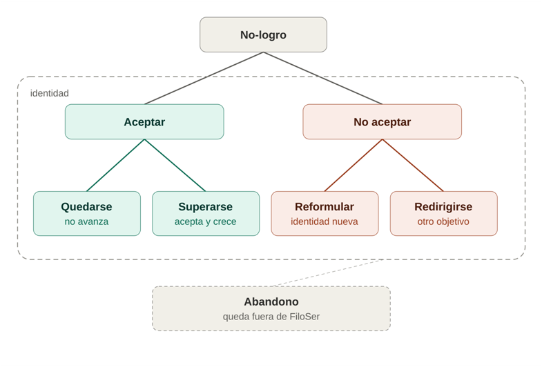

"FiloSer evoluciona hacia abajo para crecer hacia arriba"
Por qué existe, para qué nació y qué persigue por debajo de lo que se ve.
FiloSer es una disciplina de desarrollo personal que busca acompañar a la persona desde su propia identidad hacia el sentido y el propósito de cada disciplina o rol que desee desarrollar, alcanzar o mejorar.
FiloSer existe para acompañar a las personas a reconocerse, aceptarse y, desde allí, avanzar hacia el desarrollo personal, de índole personal y/o profesional. Busca hacerlo desde una mirada de base biológica, completada por los rasgos que distinguen al ser humano del resto de las especies: su gestión emocional, racional y corporal, capaz de volcarse en un vocabulario común. A eso se suma una distinción central para FiloSer: lo visible, aquello que el ser humano puede comunicar, y lo invisible, aquello que no logra comunicar por ninguna vía que él mismo pueda reconocer.
No nació de una teoría, nació de una práctica sostenida desde joven: bucear los propios problemas y los ajenos hasta encontrar una salida. Esa costumbre se volvió oficio primero como entrenador de golf, y después como coach ontológico y deportivo — y en ese oficio apareció, una y otra vez, la misma sensación: más allá de la capacidad y la voluntad puestas en juego, algo seguía faltando para que los procesos tengan más chances de ser eficientes. Y eficiente no tan solo por el resultado de logro, sino principalmente por el aprendizaje que cada persona logra, por acompañar a transitar caminos, a desafiar miradas, errar, aprender y volver a andar.
La respuesta estaba, sin saberlo todavía, en una frase leída en Mi Clase de Golf, de Jim Flick y Glen Waggoner (Ediciones Tutor, 2001, pág. 28): al golf se aprende en términos de golf, no en términos personales. Costó tiempo reconocerla y aceptarla del todo. La confirmación definitiva no vino del libro, vino de la cancha: si un jugador no entrena y juega al golf tal como el golf lo pide — si no lo acepta tal cual es —, la disciplina se vuelve irritante, frustrante y exultante a la vez, de altísimo costo energético tanto en los buenos momentos como en los malos.
De ahí salió la primera convicción de FiloSer: no alcanza con construir un swing, en muchas ocasiones hay que construir un carácter de jugador o jugadora de golf — lo que hoy, con el vocabulario ya desarrollado del corpus, se puede nombrar con precisión como una identidad adaptativa específica para el golf, y también para la vida. No siempre la persona trae consigo los recursos para poner en marcha la capacidad de adaptarse a la disciplina o rol que desea abordar. No todo consiste en el saber hacer, en tener los conocimientos de cómo hacer las cosas, en la teoría de la disciplina o rol a desarrollar. Siempre aparece un trasfondo en aquello que la persona desea lograr. No basta con el conocimiento, hay que saberlo utilizar, hay que dominar de alguna manera el arte de lo que la persona quiere realizar.
FiloSer no existiría sin el Sujeto de Superación: es quien decide entregarse a un camino de desarrollo y asumirse protagonista absoluto de su propio proceso. No es un cliente, no es un coachee, no es un paciente — es quien se lanza sabiendo que el resultado no está garantizado, pero que sí o sí saldrá más preparado para la próxima oportunidad.
FiloSer persigue el desarrollo personal, donde el acompañante no debe juzgar, y donde el Sujeto de Superación es el protagonista absoluto del proceso junto a la disciplina o rol que desea alcanzar o mejorar. El acompañante forma, educa y enseña al Sujeto de Superación en qué consiste el proceso, para que este sea lo más eficiente posible, con el objetivo de mínima de producir, por un lado, aprendizaje y consolidación de hábitos que a la persona le ayuden a llevar una vida mejor según su propia mirada, y en segunda instancia, a que la persona valide y reconozca su propio progreso.
FiloSer es un espacio sin estructura predefinida; su método es la adaptabilidad al Sujeto de Superación. Sus recursos fundamentales son el vocabulario, la base biológica del ser humano, las verdades de la naturaleza y algunas pocas verdades humanas extraídas de la matemática y la geometría, entre otras cuestiones que se desarrollarán más adelante, en otros textos. Muchos recursos los aportará el propio Sujeto de Superación desde el reconocimiento de su esencia biológica, sus rasgos distintivos, su identidad basal, sus identidades adaptativas ya existentes, su experiencia y su propia mirada sobre su vida y su contexto.
Uno de los motivos más grandes del enojo, la frustración, el desgano, es no entender por qué algo no se logra — y sin ese entendimiento, no se pueden construir respuestas ni acciones para mejorar de manera sostenible. Leer correctamente la verdad de la disciplina o el rol que se quiere alcanzar es, por eso, enormemente poderoso: ajusta las creencias de la persona a la realidad de lo que pretende hacer. A su vez, esa lectura le dará muy posiblemente un plan de acción más eficiente, donde los errores en las búsquedas no serán errores sino aprendizajes, pues podrá confrontarlos de manera genuina con lo que la disciplina o rol demanden.
Un ejemplo simple lo muestra bien: mucha gente cree que pegarle bien a la pelota es jugar bien al golf, y eso no es tan así como parece. Lo que sí hace pegarle bien a la pelota es dar una sensación de plenitud y placer casi inigualable, que no necesariamente será de utilidad para el juego. Jugar bien ayuda a pegarle bien; tomar la decisión correcta ayuda a pegarle bien; y aun haciendo todo bien, un tiro puede malograrse por un rebote desafortunado.
Con la vida pasa lo mismo. El resultado no depende al cien por ciento de la persona, incluso en su propia búsqueda por superarse. Los contextos internos y externos del ser humano no siempre son controlables de manera absoluta.
Desde ese contexto, FiloSer parte de una observación repetida en años de experiencia: cuanto más cerca está la persona de su identidad, y del sentido y propósito de la disciplina que persigue, más genuina y eficientemente transita el proceso. Así se pretende acompañar al Sujeto de Superación a adaptarse a la disciplina o rol que desea, desde lo que esa disciplina o rol demande — no desde sus propios términos —, salvo que la persona acepte no aceptarlas y, desde ahí, reformule esa disciplina o rol desde sus propios términos, o se redirija hacia un objetivo distinto.
Esto no significa que otras disciplinas de desarrollo personal no sirvan — sirven, y mucho, pero no para todos. Y FiloSer no pretende ser la excepción a esa cuestión: no pretende ser para todas las personas, pues tal vez no todas necesiten lo mismo para superarse.
FiloSer no acompaña desde una estructura conversacional fija — discierne. Frente a la verdad de una disciplina, el orden de intervención del acompañante varía en función del Sujeto de Superación que tenga enfrente; los recursos no son siempre los mismos.
Lo que sí se mantiene en cada conversación o proceso es el grado de intervención del acompañante, que fluctúa de menor a mayor: primero, buscar que la persona la descubra por sí misma desde las preguntas y los silencios; si no lo logra, reformular preguntas al respecto; si aun así no lo logra, ofrecerle opciones para que elija entre ellas y las ponga a prueba; y solo en última instancia, enseñarla, mostrarla directamente — esto último únicamente desde la verdad de la naturaleza o de la disciplina que se pretende abordar. El acompañante debe poder discernir si la persona necesita, en cada momento, que se la eduque, que se le enseñe o que se la forme dentro del proceso, o bien derivarla a un profesional que lo complete.
Esto pone un límite claro y deliberado al alcance de FiloSer: el acompañante debe conocer el sentido y el propósito de la disciplina o el rol que la persona busca alcanzar. Sin ese conocimiento, no puede ser eficiente con las preguntas ni ejecutar la fórmula FiloSer en toda su dimensión. Por eso, por ejemplo, si el acompañante no sabe de arquitectura, o no se interesa por el sentido, el propósito y las particularidades de esa disciplina, no acompaña a arquitectos: no conocer ni tener interés genuino en una disciplina aumenta la posibilidad de que cualquier acompañante sea ineficiente en ese acompañamiento en particular, por más formado que esté en el arte de acompañar. Al menos, esa es la mirada desde donde parte FiloSer respecto al acompañante.
Hay, además, un límite todavía más profundo, que no depende del conocimiento de la disciplina sino de la relación misma con el Sujeto de Superación: FiloSer no permite al acompañante hacer interpretaciones personales ni profesionales de lo que le está pasando a la persona. Esta premisa se apoya en el juramento hipocrático — "primero no dañar" — llevado al desarrollo personal: primero no interferir, y pegadito a esto, primero no dañar. Interpretar es, en el fondo, reemplazar la mirada del Sujeto de Superación por la propia — y eso, por más bienintencionado que sea, es exactamente lo que FiloSer busca evitar.
Reconocer el motivo del no-logro — no solo el resultado, sino sus causas — le permite a la persona algo que de otro modo no tiene: la posibilidad real de elegir. Frente a lo que no se logra, hay siempre dos caminos genuinos: aceptarlo y quedarse donde está, o aceptarlo e intentar superarlo. Hay, además, un tercer camino, desafiante, adrenalínico, quizá más riesgoso: no aceptar la verdad de la disciplina.
No aceptar, sin embargo, no es un punto final — siempre impone movimiento. Ese movimiento puede tomar distintas formas — dos de las más frecuentes son: reformular la identidad y/o la disciplina, construyendo algo distinto a lo que la disciplina exigía de entrada; o redirigir la identidad y/o el objetivo, dejando atrás la disciplina original por completo.
Lo que no forma parte de este tercer camino es el abandono sin ninguno de esos dos movimientos. Esto no es una cuarta opción: ante el abandono, FiloSer no puede actuar, pues el abandono donde la persona se abandona a sí misma quizá pueda obedecer o ser señal de una dificultad orgánica, y eso excede el alcance de FiloSer, tal como este documento ya declara: FiloSer no es terapia, no trabaja sobre la salud mental.
Un caso público ilustra este tercer camino. Bryson DeChambeau, golfista profesional conocido por su enfoque científico del swing (gesto deportivo para impactar la pelota con un palo de golf), transformó su físico de manera drástica para ganar distancia con el driver. El propio DeChambeau habló públicamente, en distintas entrevistas, de los costos que le trajo ese camino: cambios de ánimo pronunciados, problemas de salud, lesiones — y terminó revirtiendo buena parte del enfoque. En una entrevista ha señalado, con otras palabras a las de este documento, algo cercano a lo que aquí se sostiene: que se había alejado de la verdad del juego. Hoy sostiene que su foco está en mantener la pelota en juego y mejorar su juego cerca del hoyo (en la jerga de golf se llama juego corto). Más recientemente, en un video de su canal de YouTube donde recorre Northwood Golf Club — un campo público de nueve hoyos entre secuoyas gigantes, diseñado por Alister MacKenzie —, de sus palabras se desprende una convicción de fondo: que el golf debería volver al diseño de los campos antiguos, donde pegar largo no basta, y el juego corto es lo que marca la diferencia. Respecto a su físico, sostiene haber regresado a un estado más normal para sí mismo.
Otro caso, más lejano para nuestra modernidad, fue no aceptar las condiciones naturales del día y la noche. Durante la noche, el ser humano se volvía más vulnerable frente a los depredadores; con la luz del fuego podía ver mejor, y el propio calor del fuego los espantaba. Es un caso de no aceptar una condición natural de la vida y, desde esa no aceptación, actuar a favor de conservarla — creando, llamémoslo así, el oficio de fogonero, y más adelante las velas dentro de las casas, y después la luz eléctrica.

Los tres caminos frente al no-logro, dentro del marco de la identidad. El abandono queda deliberadamente afuera: no es un camino, y excede el alcance de FiloSer.
Por debajo de lo que se ve, FiloSer persigue además dos propósitos que no forman parte de su objetivo declarado de desarrollo personal, pero que atraviesan toda la disciplina.
El primero es lingüístico: FiloSer elige deliberadamente un vocabulario llano. Busca bajar a tierra el vocabulario específico de cada disciplina, traducirlo a palabras mundanas, accesibles para cualquiera desde el diccionario común, evitando en lo posible el tecnicismo en su propio vocabulario. Es, por ejemplo, el motivo por el que este corpus prefiere hablar de cimiento y contrapiso antes que de constructos técnicos, o de visible e invisible antes que de consciente e inconsciente.
El segundo es un criterio de éxito distinto: FiloSer mide el logro no por el resultado externo, sino por el aprendizaje interno y la toma de conciencia que permiten la superación sin traicionar la naturaleza de cada ser humano. Con esa forma de medir el éxito, busca, tal vez, disminuir la frecuencia de patologías psicosomáticas — tan comunes cuando el desarrollo personal se persigue traicionando la propia esencia.
FiloSer no es terapia, no medica, no aconseja y, por sobre todo, no trabaja sobre la salud mental de los seres humanos.
FiloSer nació de la infancia, cuando mis padres me ponían desafíos de conflictos a resolver, y desafíos a contrarrestar sentencias que, vestidas de verdades, luego quedaban expuestas para confirmarlas o refutarlas. También nació del interés por colaborar con las personas a solucionar problemas; luego se construyó desde una cancha de golf y de una frase que costó años aceptar: una disciplina se aprende en sus propios términos, no en términos ajenos a ella. De ahí salió un método — discernir qué necesita cada persona antes de intervenir — y un límite deliberado — no acompañar donde no se conoce la disciplina. Y por debajo de todo eso, dos propósitos que rara vez se dicen en voz alta: hablar simple, y medir el éxito desde adentro. Sobre este origen se apoya el resto del corpus: los cimientos de la identidad, y el león que camina sobre ellos.
Flick, J., & Waggoner, G. (2001). Mi Clase de Golf. Ediciones Tutor, S.A. (ISBN 978-84-7902-271-6), pág. 28.
Video de YouTube de Bryson DeChambeau en Northwood Golf Club (Guerneville, California), publicado en julio de 2026 — confirmado como real (campo público de nueve hoyos entre secuoyas, diseñado por Alister MacKenzie).
Documentos relacionados: Antes del león, El león en dos pisos y El león en tres pisos (FiloSer, documentos de trabajo previos).